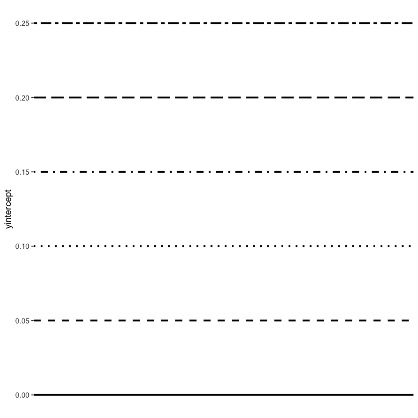
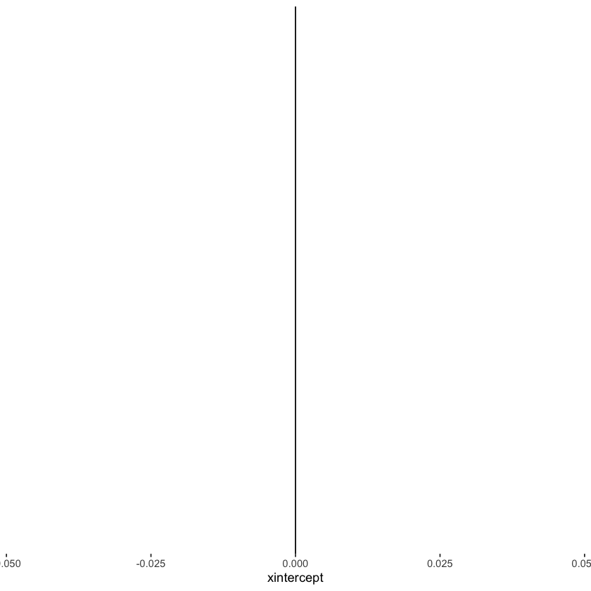
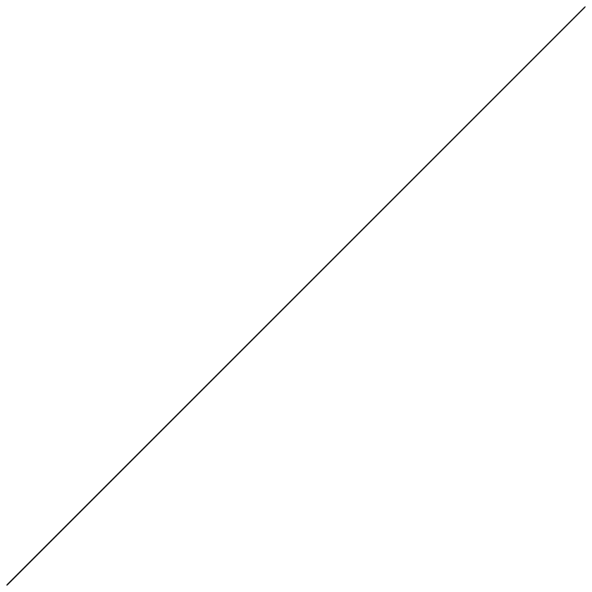
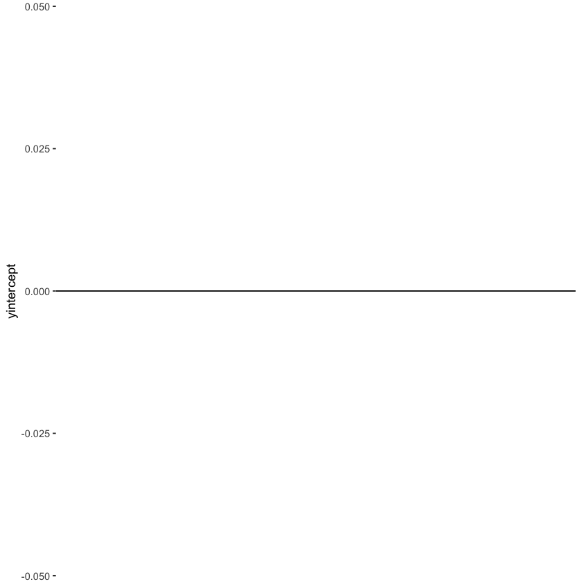

ggplot
Contents
ggplot#
library(tidyverse)
library(broom)
library(tree)
library(digest)
library(testthat)
── Attaching packages ───────────────────────────── tidyverse 1.3.2 ──
✔ ggplot2 3.3.6 ✔ purrr 0.3.4
✔ tibble 3.1.8 ✔ dplyr 1.0.10
✔ tidyr 1.2.0 ✔ stringr 1.4.1
✔ readr 2.1.3 ✔ forcats 0.5.2
── Conflicts ──────────────────────────────── tidyverse_conflicts() ──
✖ dplyr::filter() masks stats::filter()
✖ dplyr::lag() masks stats::lag()
Attaching package: ‘testthat’
The following object is masked from ‘package:dplyr’:
matches
The following object is masked from ‘package:purrr’:
is_null
The following objects are masked from ‘package:readr’:
edition_get, local_edition
The following object is masked from ‘package:tidyr’:
matches
geom_point shapes#
geom_point(shape = 0)

Straight lines#
Line types#
(ggplot()
+ geom_hline(yintercept = 0, size = 1, linetype = 'solid')
+ geom_hline(yintercept = 0.05, size = 1, linetype = 'dashed')
+ geom_hline(yintercept = 0.1, size = 1, linetype = 'dotted')
+ geom_hline(yintercept = 0.15, size = 1, linetype = 'dotdash')
+ geom_hline(yintercept = 0.2, size = 1, linetype = 'longdash')
+ geom_hline(yintercept = 0.25, size = 1, linetype = 'twodash')
+ theme_bw()
+ theme(panel.border = element_blank(),
panel.grid.major = element_blank(),
panel.grid.minor = element_blank()))

Draw vertical line#
(ggplot() + geom_vline(xintercept = 0, size = 0.5)
+ theme_bw()
+ theme(panel.border = element_blank(),
panel.grid.major = element_blank(),
panel.grid.minor = element_blank()))

Draw 45-degree diagonal line#
(ggplot() + geom_abline(intercept = 0, slope = 1, size = 0.5)
+ theme_bw()
+ theme(panel.border = element_blank(),
panel.grid.major = element_blank(),
panel.grid.minor = element_blank()))

Draw horizontal line#
(ggplot() + geom_hline(yintercept = 0, size = 0.5)
+ theme_bw()
+ theme(panel.border = element_blank(),
panel.grid.major = element_blank(),
panel.grid.minor = element_blank()))

Get rid of grid lines#
(ggplot()
+ theme_bw()
+ theme(panel.grid.major = element_blank(),
panel.grid.minor = element_blank())
)